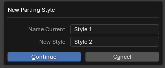
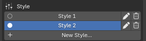

Save And Switch Parting Styles¶
Applies to: Parting Placer V2.0.0 · Blender 4.4 · 5.2
Keep more than one set of partings on the same head, and switch between them.
You Need First
- Place Partings
- Styles explains what a style is.
Turn Preview Off First
If the Preview box shows Disable Preview, select it before you start. With Preview on, a style can come back with its partings' Empties hidden.
Start A New Style¶
- Place at least one parting in your current style.
- Select New Style… at the bottom of the Style box.
- Type a name for the style you are parking in Name Current.
- Type a name for the new style in New Style.

- Select Continue.
- Place partings for the new style.
Switch Back¶
- Select Disable Preview if it is showing.
- Select the style's name in the Style list.

The style that was showing is parked. Its partings are kept in your file.
Rename Or Delete A Style¶
- Select the pencil beside a style to rename it.
- Select the trash can beside a style to delete it, with its partings. It is greyed out while the head has only one style.
If You're Stuck
- Partings gone after switching? See I Cannot See Any Partings.
- Full details on each control: Target And Styles.
Recommended next: Repair Or Reset A Head